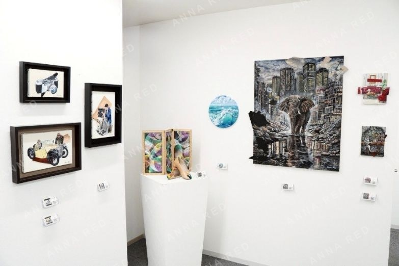
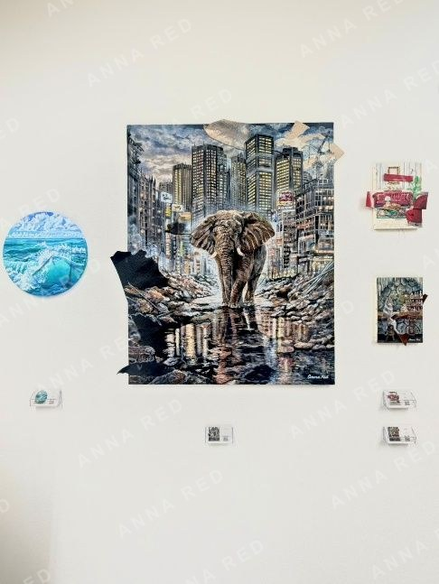
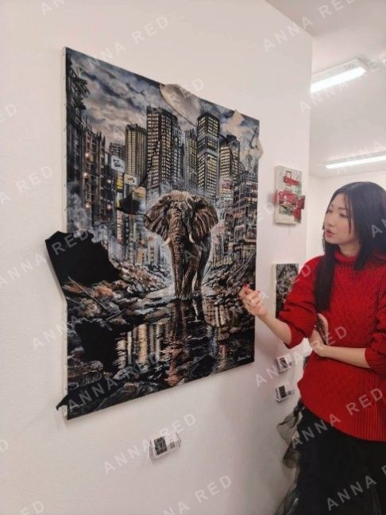
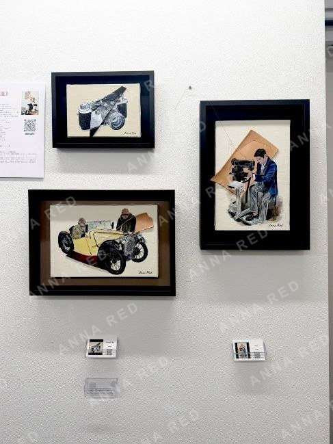

東京/aLbaseにて開催された、グループ展SCRAP & BUILDにご来場いただいた皆さま、 ありがとうございました。本展では、個性の強い作家たちが「廃材」を共通の起点として集まり、 それぞれの表現で作品を展示しました。
同じテーマであっても視点や扱い方は異なり、会場には多様な解釈が並びました。
私が使用したレザーは、昨年、鞄屋さんから譲っていただいたものです。 この展示のために集めた素材ではなく、たまたま手元にあったもの。 しかし結果的に、今回のテーマと自然に重なりました。
"廃材"と呼ばれることもある素材ですが、私にとってはただ美しい素材のひとつです。 循環をテーマに、物を大切に使うこと、それを生み出す職人、 そして永続的に愛される場所を描きました。レザーは作品の中に自然に溶け込み、 新たな役割を担っています。
SCRAPとは、価値が失われた状態ではなく、視点が変わった状態なのかもしれません。 手を加え、場を変えれば、再び誰かの時間と結びつく。
循環とは、続ける意思そのものです。 止めなければ、形を変えながら永続していく。
30号作品《歩みを止めぬ者》には、その静かな意志を込めました。
会場で作品をご覧いただいた皆さま、改めて感謝申し上げます。


